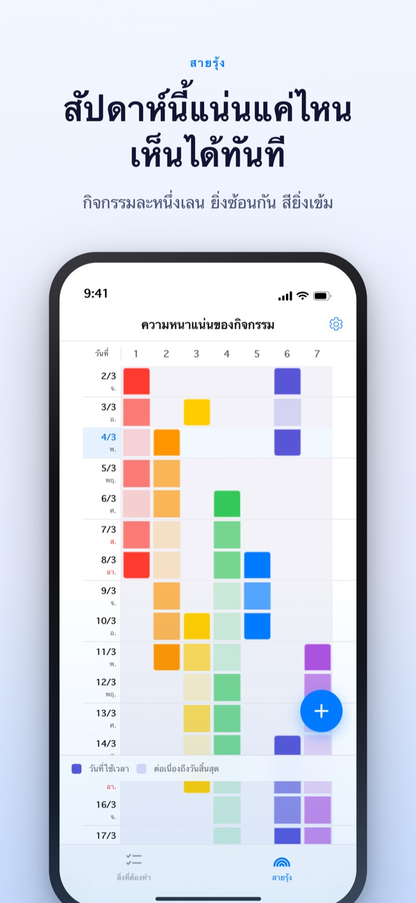
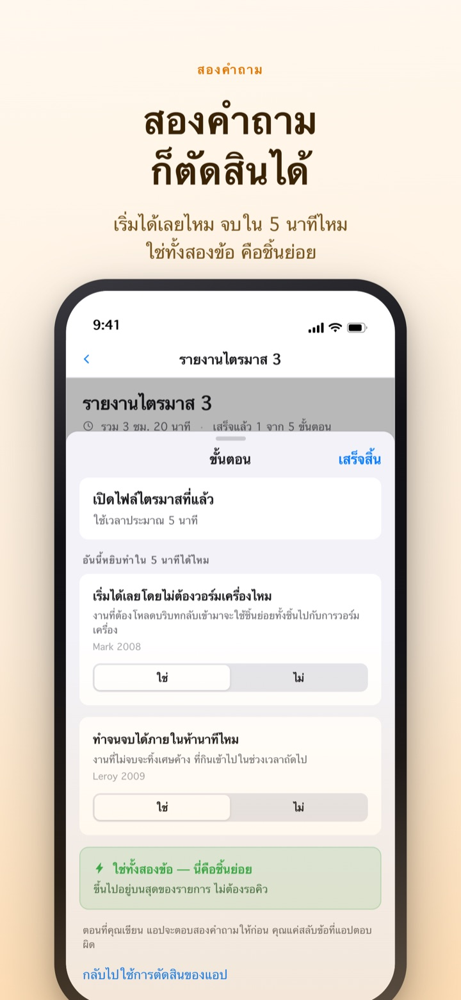
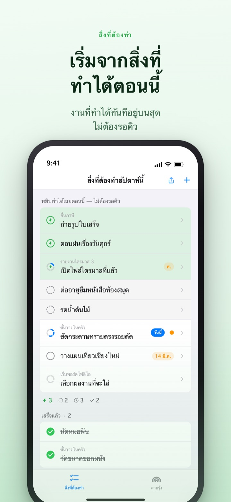
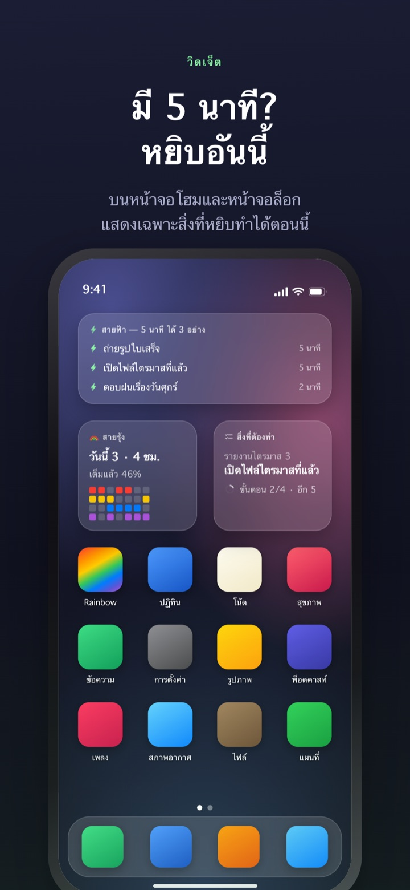

เห็นสัปดาห์ที่แน่นก่อนถึง
และไม่ปล่อย 5 นาทีให้หลุดมือ
งานยิ่งซ้อนกัน สีของสายรุ้งก็ยิ่งเข้ม แบ่งงานใหญ่เป็นขั้นไว้ พอมีช่องว่างขึ้นมา ขั้นที่หยิบทำได้ทันทีจะรออยู่บนสุดแล้ว
สายรุ้ง การแบ่งงาน ตัวจับเวลา และการซิงค์กับ Mac ใช้ได้ฟรี

ลองแยกด้วยตัวเอง
"รายงานไตรมาส 3" ถูกแบ่งไว้เป็น 5 ขั้น เลือกขั้นหนึ่ง แล้วลองเปลี่ยนเวลาหรือสลับคำตอบของสองคำถาม เฉพาะขั้นที่ตอบ "ใช่" ทั้งสองข้อเท่านั้นที่เป็นชิ้นย่อยซึ่งหยิบทำได้ใน 5 นาที
เคยไหม ปฏิทินดูว่าง แต่สัปดาห์นั้นกลับเหนื่อยจนหายใจไม่ทัน
ปฏิทินบอกแค่ว่ามีนัดหรือไม่มี ไม่ได้บอกว่างานกองซ้อนกันอยู่แค่ไหน เดดไลน์สามงานมาชนกันในสัปดาห์เดียว เรามักรู้ตัวก็ตอนเข้าสัปดาห์นั้นไปแล้ว ส่วน 5 นาทีที่ว่างระหว่างนั้นก็หมดไปกับการไล่อ่านรายการสิ่งที่ต้องทำ Rainbow of Desire วาดหนึ่งสัปดาห์เป็นตาราง ระบายสีเข้มตามที่งานซ้อน และแยกขั้นที่ทำในช่องว่างได้ไว้ให้ต่างหาก
สองคำถามก็แยกออก
เมื่อแบ่งงานใหญ่เป็นขั้น แต่ละขั้นจะถูกถามสองข้อ เริ่มได้เลยโดยไม่ต้องวอร์มเครื่องไหม ทำจนจบได้ภายในห้านาทีไหม
ขั้นที่ตอบใช่ทั้งสองข้อเท่านั้นคือชิ้นย่อย แอปจะตอบให้ก่อนจากเวลาและคำที่เขียน คุณแค่สลับคำตอบตอนที่มันผิด

มีช่องว่างเมื่อไร ดูแค่บนสุด
ปัดสิ่งที่ต้องทำไปทางขวาเพื่อติดสายฟ้า แล้วมันจะแซงคิวขึ้นไปอยู่บนสุด ไม่ต้องอ่านทั้งรายการก็เจอสิ่งที่หยิบทำได้ตอนนี้
ขั้นต่าง ๆ ต้องรอกันหรือไม่ ตั้งครั้งเดียวต่อกลุ่ม ถ้าตามลำดับ ขั้นแรกที่ยังไม่เสร็จจะขึ้นก่อน ถ้าไม่เรียงลำดับ ชิ้นย่อยที่หยิบได้ตอนนี้จะขึ้นก่อน

ไม่ต้องเปิดแอปก็เห็น
ตัวจับเวลานับถอยหลังจนถึงเวลาที่กิจกรรมจบ และเวลาที่เหลือยังแสดงบน Dynamic Island กับหน้าจอล็อกด้วย
วิดเจ็ตบนหน้าจอโฮมและหน้าจอล็อกแสดงงานที่กำลังทำ สิ่งที่ทำได้ใน 5 นาที และสายรุ้งของสัปดาห์นี้ (วิดเจ็ตเป็นของ Pro)

เริ่มได้ในสามขั้น
- 1
ลากกิจกรรม
แตะค้างที่ช่องว่างของวันเริ่ม แล้วแตะวันสิ้นสุดอีกครั้ง เส้นหนึ่งเส้นจะปรากฏบนสายรุ้ง
- 2
แบ่งงานใหญ่
แตะสิ่งที่ต้องทำ เขียนขั้นและเลือกเวลา แอปจะตอบสองคำถามให้ก่อน
- 3
ว่างเมื่อไรดูบนสุด
ชิ้นย่อยและรายการที่ติดสายฟ้าจะรวมกันอยู่บนสุดโดยไม่ต้องรอคิว
คำที่จะเจอบนหน้าจอ
- ช่องสีเข้ม · ช่องสีอ่อน
- วันที่ลงมือทำจริง และช่วงที่เหลือจนถึงวันสิ้นสุด
- ทั้งแถวเต็ม
- วันที่มีงานวิ่งพร้อมกันมาก งานเดียวเลื่อนก็เลื่อนทั้งวัน
- ชิ้นย่อย
- ตอบใช่ทั้งสองคำถาม หยิบทำได้เมื่อมีเวลา 5 นาที
- ช่วงเวลายาวแบบสั้น
- ไม่ต้องวอร์มเครื่อง แต่ทำไม่จบในชิ้นย่อย นั่งทำทีเดียวให้เสร็จ
- ช่วงเวลายาว
- ต้องวอร์มเครื่องหรือใช้เวลา 45 นาทีขึ้นไป วางไว้ในเวลาที่กันไว้
- สายฟ้า
- เครื่องหมาย "ทำเลย" ที่คุณติดเอง จะแซงขึ้นไปบนสุด
- ตามลำดับ · ไม่เรียงลำดับ
- ขั้นต่าง ๆ ต้องรอกันหรือไม่ ตั้งครั้งเดียวต่อกลุ่ม
- สมุดเวลาที่ได้คืน
- สรุปประจำสัปดาห์ งานที่เหลือ เวลาที่ได้คืน และเวลาพัก บันทึกแยกกันโดยไม่รวมกัน
เวลาสะสมจากล่างขึ้นบน เวลาของงานใหญ่คือผลรวมเวลาของแต่ละขั้น
สิ่งที่ต้องใช้ในวันนี้ ใช้ฟรี
ฟรี
- สายรุ้ง (ตารางความหนาแน่นของกิจกรรม)
- การแบ่งงานเป็นขั้นและสองคำถาม
- สายฟ้า ลำดับขั้น
- ตัวจับเวลา (Dynamic Island · หน้าจอล็อก)
- ซิงค์กับแอป Rainbow Craft บน Mac ผ่าน iCloud
- สมุดเวลาที่ได้คืน 2 สัปดาห์ล่าสุด
Rainbow Plus · Rainbow Pro
- Plus: สถิติกิจกรรม และสมุดย้อนหลังเกิน 2 สัปดาห์
- Pro: ทุกอย่างใน Plus พร้อมวิดเจ็ตบนหน้าจอโฮมและหน้าจอล็อก
- Pro: นำเข้าจากปฏิทินและแสดงต่อเนื่อง
- Pro: แชร์กิจกรรม (ดูได้อย่างเดียว)
- Pro: ปลดล็อก Rainbow Craft Pro บน Mac ไปด้วย
เลือกได้ทั้งแบบสมัครสมาชิกรายปี หรือจ่ายครั้งเดียวใช้ตลอดไป
ส่วนที่เก็บเงินมีแค่การย้อนดูสัปดาห์ที่ผ่านมา และการพาข้อมูลออกไปนอกแอป ใครเคยซื้อ Pro ไว้ก่อน หรือยังสมัครรายเดือนอยู่ ยังเป็น Pro เหมือนเดิม
คำถามที่พบบ่อย
ต้องมีบัญชีหรือลงชื่อเข้า iCloud ไหม
ถ้าใช้คนเดียวไม่ต้อง ไม่ต้องสมัคร ข้อมูลเก็บในเครื่อง ถ้าจะซิงค์กับอุปกรณ์อื่นหรือแอปบน Mac หรือใช้การแชร์ ต้องลงชื่อเข้า iCloud
แอปตอบสองคำถามผิด
แตะที่ขั้นแล้วสลับ "ใช่" กับ "ไม่" คำตอบที่คุณตั้งเองจะสำคัญกว่าการตัดสินของแอป ถ้าอยากให้แอปตัดสินอีกครั้ง แตะ "กลับไปใช้การตัดสินของแอป" ขั้นที่ไม่ได้ใส่เวลาจะไม่นับเป็นชิ้นย่อย เพราะแอปไม่รู้ว่าจะจบใน 5 นาทีหรือเปล่า
ดูร่วมกับคนอื่นได้ไหม
ส่งลิงก์เชิญเพื่อแชร์กิจกรรมแบบดูได้อย่างเดียว (Pro) หรือเปิดรายการสิ่งที่ต้องทำที่คุณกับคนที่เชิญอ่านและเขียนร่วมกันได้ ใครได้ลิงก์ก็เข้าร่วมได้ จึงควรส่งให้เฉพาะคนที่จะใช้ด้วยกัน ไม่เกี่ยวกับการแชร์กันในครอบครัวของ Apple
กิจกรรมในแอปปฏิทินจะแสดงด้วยไหม
กิจกรรมจากปฏิทินที่เลือกจะแสดงบนสายรุ้งและหน้ารายวันด้วย (Pro) แอปอ่านอย่างเดียว ไม่เขียนอะไรลงปฏิทิน
ติ๊กจากวิดเจ็ตได้ไหม
วิดเจ็ตใช้ดูอย่างเดียว แตะแล้วจะเปิดหน้าสิ่งที่ต้องทำทันที ให้ติ๊กในแอป
ต้องซื้อแอปบน Mac แยกไหม
Rainbow Craft เป็นแอป macOS แยกต่างหากบน Mac App Store ถ้าใช้บัญชี iCloud เดียวกัน สิ่งที่ต้องทำและแผนรายสัปดาห์จะซิงค์กันเอง และการซิงค์ไม่มีค่าใช้จ่าย
สิ่งที่ต้องทำที่เขียนไว้ก่อนหน้ายังอยู่ไหม
อยู่ครบ ทั้งสิ่งที่ต้องทำ ขั้น และเวลาที่ใส่ไว้ ป้ายเงื่อนไขการเริ่มงานแบบเดิมจะถูกแอปตัดสินใหม่ด้วยสองคำถาม
ข้อมูลที่เขียนเก็บไว้ที่ไหน
ไม่มีเซิร์ฟเวอร์ ข้อมูลอยู่แค่ในเครื่องและ iCloud ส่วนตัวของคุณ นักพัฒนามองไม่เห็น ไม่ใช้ตัวระบุโฆษณาหรือตำแหน่ง ส่งเฉพาะสถิติการใช้งานแบบไม่ระบุตัวตน ซึ่งปิดได้ในการตั้งค่า
ยกเลิกการสมัครสมาชิกอย่างไร
ไปที่แอปการตั้งค่า > บัญชี Apple > การสมัครรับ หากไม่ยกเลิกอย่างน้อย 24 ชั่วโมงก่อนสิ้นสุดรอบ ระบบจะต่ออายุอัตโนมัติในราคาเดิม แบบตลอดไปจ่ายครั้งเดียว
ใช้แล้วติดขัดหรือเจออะไรแปลก ๆ เขียนมาที่ leeo@kakao.com ได้เลย ในการตั้งค่าของแอปก็มีช่องทางติดต่อเช่นกัน